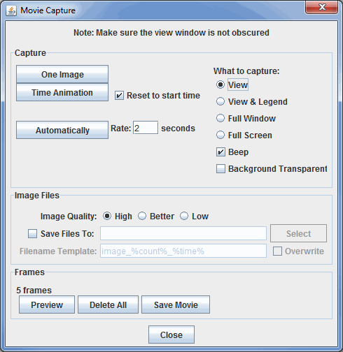

Image and Movie Capture Controls
McIDAS-V can capture the Main Display window as an image, a QuickTime movie or an animated GIF.
The user can save a display as an image by selecting the View->Capture->Image... menu
item in the Main Display window. A file dialog will open where you can enter a file name for the image
file. McIDAS-V supports JPEG, PNG, GIF, PDF, PS, and SVG formats. From this File
Dialog you can also select whether or not the background is transparent. The Borders Visible controls adds a border around panels when capturing an image with the All Views option. When enabled, borders the thickness specified in the dropdown and color specified in the swatch will be added around each panel.
Note: When capturing an image, the Main Display window cannot be obscured.
McIDAS-V can also write out an image and the corresponding Google Earth KML
or KMZ file. For this to be correct, the projection must be a Lat/Lon geographic
projection (i.e., rectilinear) and in an overhead view. Some of the default
projections that are Lat/Lon include World, Africa, Asia, Australia, and the
individual state projections (US->States->...). You can also create your own
Lat/Lon projection using the Projection
Manager. The simplest way to get a
correct projection is to select the Projections->Use Displayed Area menu
item in the Main Display window. If you specify a .kml file, McIDAS-V will generate an image with the same
file prefix and the kml file that refers to the image. If you specify a .kmz
file (which is a zip format) it will contain the image and the kml
file.
You can send any display to a printer. Select the View->Capture->Print... menu
item in the Main Display window. A Print dialog will popup where you can configure and print an image.
You can save any sequence of displays as a movie. Select the View->Capture->Movie... menu
item in the Main Display window to open the Movie Capture window:

Image 1: Movie Capture Window
Properties
Note: More information about these controls is found in the Creating a Movie section below.
- Capture -
- - Captures one image to create a movie.
- - Captures a loop of images at the specified dwell rate through the Time Animation Controls.
- Reset to start time - Resets the loop to the initial timestep before recording the video.
- - Creates a new frame in the movie every given number of seconds.
- What to capture -
- Current View - Captures only what is in the view screen of the Main Display window.
- All Views - Captures all of the panels in the Main Display window without including any legends or toolbar buttons.
- Current View & Legend - Captures both the view and the Legend.
- Full Window - Captures the entire Main Display window, including the toolbars.
- Full Screen - Captures everything visible on the monitor.
- Beep - Produces a beeping noise at the beginning of each frame captured in the movie.
- Background Transparent - Captures the movie with the background image transparent.
- Borders Visible - Adds a border around panels when capturing a movie with the All Views option. When enabled, borders the thickness specified in the dropdown and color specified in the swatch will be added around each panel.
- Image Files -
- Save Files To - Allows you to individually save each image in your movie. To use this option, click the checkbox for Save Files To and specify a directory.
- Filename Template - Sets the naming structure for the images. This option is only available if you are saving the individual images in your movie with the Save Files To option. There are several ways you can customize the output, described in the section below.
- Frames -
- # frames - Displays the number of frames in the movie.
- - Opens a Movie Preview window, where you can see individual slides before saving the movie.
- - Deletes every frame saved in the movie.
-
 - Saves the movie to the specified location using the chosen format type.
- Saves the movie to the specified location using the chosen format type.
To make a movie, there are three steps: capturing the frames, previewing the frames, and creating the movie. McIDAS-V supports QuickTime movies, animated GIF and AVI files, MPEG-4, Compressed ZIP, Google Earth KMZ and AniS or FlAniS HTML file formats.
- To capture frames, in the Capture section of the Movie Capture window, do the following:
- Capture one image - Makes a single frame of the McIDAS-V display. Progressively change the display and capture one frame at a time to create a movie.
- Capture animation - Captures all frames in a display time sequence that you control with the usual Time Animation Controls. Check Reset to start time to ensure you capture the entire animation sequence. The QuickTime animation capture starts on the first frame visible in McIDAS-V and goes to the end. This tool can be used to capture part of a loop.
- Capture automatically - Takes snapshots of the frames in McIDAS-V display while you make changes, such as changing the view point, zooming, rotating, etc. Click the button again to stop the snapshot. You can change the sampling rate of the snapshots with the Rate field.
- You can combine these three different methods of capture. The list of frames is additive.
- You can Preview the movie by pressing the button. This opens a Movie Preview window, where you can see the individual slides before saving the movie. The Movie Preview window also allows you to remove individual frames from the movie before saving it with the
 button.
button.
- If you want to save the individual intermediate files that are used to create the movie, check the Save Files To box and specify a directory and file name format. Otherwise, the intermediate files will be
saved in a temporary directory and will be removed. You can use the following templates to customize the name of the output file:
- %count% - Represents the image counter.
- %count:decimal format% - Allows you to format the count using the same rules defined in the lat/lon format section of the User Preferences window's Formats & Data tab. You can also specify a Java DecimalFormat, e.g., %count:000% outputs three-digit counts with leading zeros (001, 002, etc.).
- %time% - Represents the animation time in the default format.
- %time:time format% - Begins with "time:" and contains a time format string using the the same date formatting rules described in the User Preferences window's Formats & Data tab.
- When done capturing the frames, select the button. This opens a Save window several options to customize the animation:
- Frames per second - Sets the speed that the animation will play. A value of 1 shows 1 frame per second, whereas 2 will play faster at a rate of 2 frames per second. For mp4 format, any fractional value will be rounded up to the nearest whole number.
- End Frame Pause - Sets the time (in seconds) that the last frame of the animation will remain visible before ending or restarting the animation. This option is applicable to animated GIFs.
- Use 'global' GIF color palette - Sets the color scheme to be used for the frames of the animation. This option is applicable for animated GIF movies, and it is enabled by default. Animated GIFs are limited to 256 colors, and this option uses the same 256 colors for every frame in the loop when the setting is enabled. Enabling this option allows for certain display settings such as a color scale to remain constant throughout the loop. If this option is disabled, then each frame uses it's own color palette, so one color may represent one value in one frame, and the same color may represent a different value in the next frame. One circumstance where disabling this option may be ideal is if the movie starts with a low-light scene (not many colors) and there is no color scale in the display.
- File Name - Sets the name and location to save the animation to.
- Files of Type - Sets the animation format to use. There are several available options, including:
- MPEG-4 files (*.mp4)
- QuickTime files (*.mov)
- AVI files (*.avi)
- Animated GIF (*.gif)
- Compressed Zip (*.zip)
- Google Earth KMZ Files (*.kmz)
- AniS or FlAniS HTML File (*.html)
McIDAS-V supports displaying certain types of QuickTime movies (including
the ones McIDAS-V generates). These movies can be loaded in the General->Files/Directories
Chooser in the Data Sources tab of the Data Explorer.